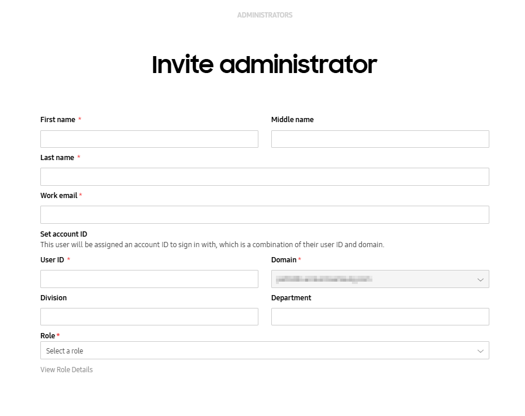
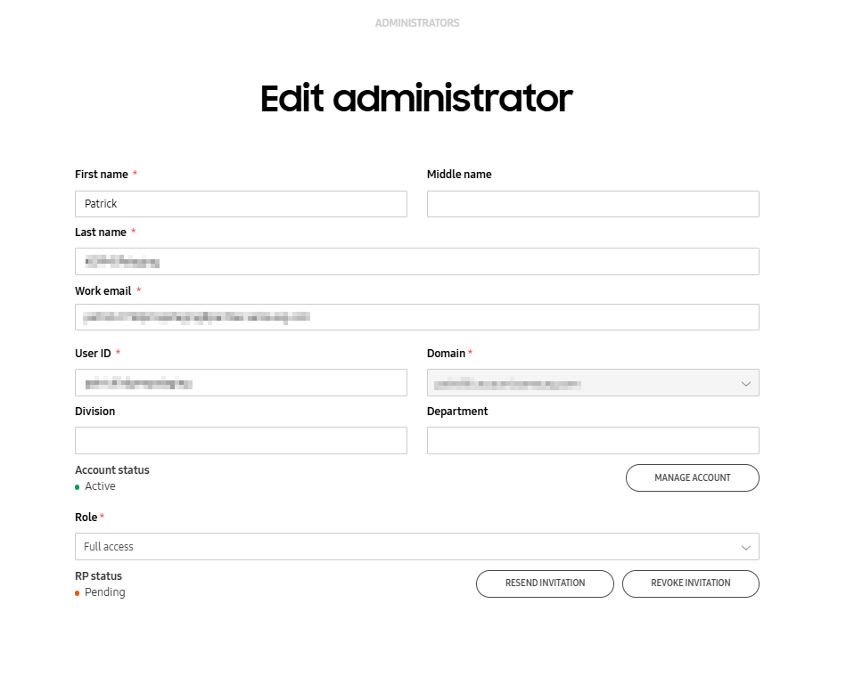

Manage admins and roles
Last updated November 19th, 2025
The Reseller Portal can be managed by multiple admins. With role-based access control (RBAC), super admins responsible for account creation can invite other admins and assign to them the roles and permissions required to manage accounts. This ensures admins only have access to the functions they are responsible for managing.
To manage your admins and roles, navigate to the Administrators & Roles page of the Knox Reseller Portal.
Admins
The Administrators tab displays a list of all admins associated with your reseller account. The super admin, who created the account, is shown with a crown next to their name.

The admins list displays the following:
| Column | Description |
|---|---|
| NAME | The admin's first and last name. |
| ACCOUNT ID |
The admin's account ID. This column displays only if you sign in with Samsung account for Business. |
| ACCOUNT STATUS |
The state of the admin's account in Samsung account for Business. This column displays only if you sign in with Samsung account for Business.
You can manage the admin's account status in the Samsung account for Business console. For more information, see the documentation for Samsung account for Business. |
| WORK EMAIL/EMAIL |
The email address assigned to the admin. The admin receives their invitation and all communications through this email. This column displays as WORK EMAIL if you sign in with Samsung account for Business. Otherwise, it displays as EMAIL. |
| ROLE | The role assigned to the admin. |
| RP STATUS/STATUS |
The admin's status which shows if they can manage customers.
This column displays as RP STATUS when you sign in with Samsung account for Business. Otherwise, it displays as STATUS. |
Invite an admin
You can invite individuals to the Knox Reseller Portal as admins. When you create an invite for an admin, you must also assign them a role.
To invite an admin:
-
On the ADMINISTRATORS tab, click INVITE ADMINISTRATOR. The INVITE ADMINISTRATOR dialog opens.

-
Enter the following information:
Field Description First name The new admin's first name. Middle name The new admin's middle name (optional). This field displays only if you sign in with Samsung account for Business.
Last name The new admin's last name. WORK EMAIL/Email address The email address assigned to the new admin. The admin will receive their invitation and all future communications through this email.
This field displays as WORK EMAIL if you sign in with Samsung account for Business. Otherwise, it displays as Email address.
User ID and Domain Set the Account ID of the new admin. These fields display only if you sign in with Samsung account for Business.
Division and Department Assign admin identifiers to more easily categorize admins (optional). These fields display only if you sign in with Samsung account for Business.
Role Select a role to assign to this new admin. -
Click INVITE.
The newly invited admin displays on the ADMINISTRATORS tab with their role. You can filter the admin list by ROLE.
If the admin hasn’t accepted their invitation yet, their STATUS is Pending. Once they accept, their STATUS is Active.
If the admin is added from the Samsung account for Business console, their information is added automatically to the admins list with NAME, ACCOUNT ID, ACCOUNT STATUS, and WORK EMAIL already populated. However, the admin will not have access to the Knox Reseller Portal until you assign them a role.
Manage an invitation
You may want to remind an admin to accept their invite, or cancel their invite after you’ve invited them. You can only manage invitations for admins with the Pending status. To resend or revoke an invitation:
-
On the ADMINISTRATORS tab, click the name of the admin. The Edit administrator page opens.
-
On the Edit administrator page, you can click:
-
RESEND INVITATION — Review the Resend invitation dialog, then click CONFIRM.
-
REVOKE INVITATION — Review the Revoke invitation dialog. To confirm this action, click REVOKE.
The admin is notified by email when you revoke their invitation. You can click RESEND INVITATION after revoking an invitation to unrevoke it again.
-
You can select the checkbox at the bottom of the ADMINISTRATORS tab to Show blocked and revoked administrators.
Edit an admin
Only admins with the Invite and manage administrators or Manage roles permission can edit other admins.
To edit an admin’s details:
-
Click the name of the admin you want to edit. The Edit administrator page opens.

-
Modify the admin’s personal details and their role, as required.
-
Click SAVE.
If you signed in with Samsung account for Business, you can click MANAGE ACCOUNT to manage admin details and account statuses in the Samsung account for Business console. If an admin’s details are edited from the Samsung account for Business console, or other Knox Partner portals, their details are automatically synced to the Knox Reseller Portal.
If an admin has no Knox Reseller Portal role, you can assign them a role on the Edit Administrator page.
Deactivate an admin
If you signed in with a personal Samsung account, you can prevent an admin from accessing the Knox Reseller Portal by deactivating their account, changing their status to Inactive. You can only deactivate admins with the Active status.
To deactivate an admin:
- On the ADMINISTRATORS tab, click the name of the admin you want to deactivate. The Edit administrator page opens.
- Click DEACTIVATE ACCOUNT. The Deactivate account dialog displays.
- Click DEACTIVATE to confirm the change.
A deactivated admin won’t be able to access to the Knox Reseller Portal, but will remain in your account.
You can select the checkbox at the bottom of the ADMINISTRATORS tab to Show blocked and revoked administrators.
Delete an admin
If you signed in with Samsung account for Business, you can delete an admin from the Knox Reseller Portal if you want to prevent them from accessing the Knox Reseller Portal by deleting them from the Samsung account for Business console.
-
The admin status changes to Pending deletion in the Samsung account for Business console. The admin is blocked and won’t be able to sign in to the Knox Reseller Portal.
-
You can reactivate an account in the Pending deletion status from the Samsung account for Business console within a 30 day grace period. After 30 days, the admin is removed from Samsung account for Business and the Knox Reseller Portal.
Additionally, if you change an admin’s role to Workforce or remove them from a service location in the Samsung account for Business console, they are also removed from the Knox Reseller Portal. If you want to remove your account’s super admin, contact support to first assign a different super admin as replacement.
Roles
You can use the ROLES tab to view, create, and manage custom permissions for admins. Use the search bar to find roles by name.
Create a role
You can create a new role to define specific permissions. By default, new roles have the View only permission and can’t manage profiles, devices, licenses, or admins.
To create a new role:
-
On the ROLES tab, click CREATE ROLE.

-
Enter the following information:
-
Role name — Enter a unique name to help you identify the newly created role.
-
Description — (Optional) Enter a description for the role. A maximum of 200 characters is permitted.
-
-
Define the following permissions:
Group Permission Customers - View only
- Manage customers — The admin can add and edit customer configuration permissions.
Devices - View only
- Manage customers (select at least one permission)
- Upload — The admin can upload devices to the Knox Reseller Portal.
- Delete — The admin can remove devices from the Knox Reseller Portal.
Activity log - View activity log — If selected, allows the admin to view the Activity log page.
Administrators and Roles - Invite and manage administrators — The admin can invite other admins to the Knox Reseller Portal.
- Manage roles — The admin can create and assign roles.
The Manage roles permission allows admins to add and edit roles to include any permission, including ones they don't have.
Knox Cloud APIs - Knox Cloud APIs — If selected, allows the admin to access the Knox Cloud APIs portal.
This field is only available if a Samsung admin has enabled Knox Cloud APIs for your tenant.
-
Click SAVE.
Edit a role
To edit an existing role:
- On the ROLES tab, click the ROLE NAME that you want to edit. The Edit role page opens.
- Modify the role name, description, and permissions, as required.
- Click SAVE.
Delete a role
You can choose to delete roles that you no longer need. You can only delete roles that aren’t associated with active admins.
To delete a role:
- On the ROLES tab, click the ROLE NAME that you want to delete. The Edit role page opens.
- Click DELETE to remove the role from the list and remove the associated permissions for all admins assigned to the role. This action can’t be undone.
You must assign any active admins a different role before you can complete the deletion.

On this page
Is this page helpful?